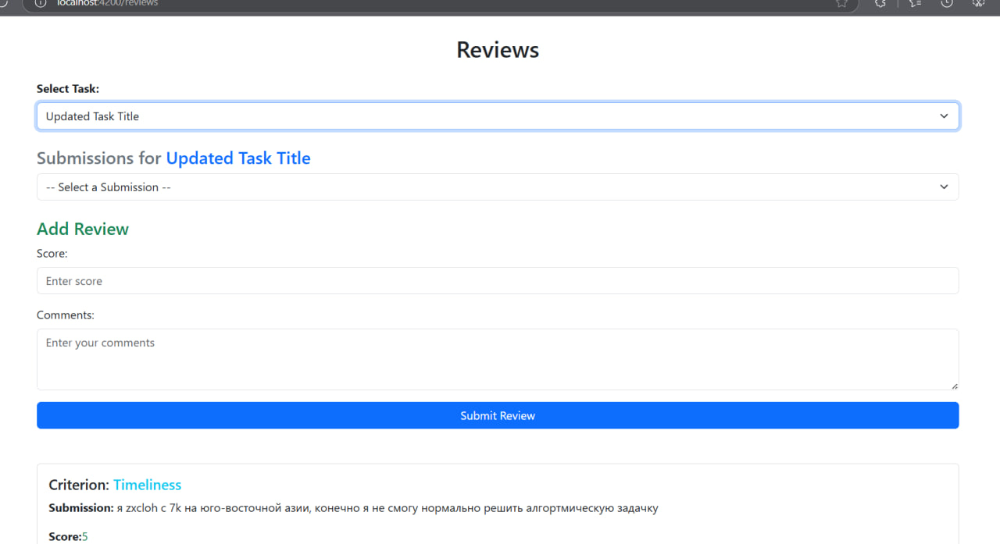

Reviews
Страница Reviews предназначена для работы студентов с рецензиями, предоставляя возможность оценивать решения других студентов, а также просматривать свои рецензии и оценки.

Основные возможности
-
Добавление новых рецензий:
Студенты могут выбрать задачу и решение для написания рецензии.
Указание критерия оценки, выставление баллов и добавление комментариев.
-
Просмотр рецензий:
Студенты могут видеть рецензии, которые они написали, а также рецензии на их решения.
-
Редактирование рецензий:
Студенты могут редактировать свои рецензии, если была допущена ошибка.
- Динамическая фильтрация:
Выбор задач и связанных решений для более удобной работы с рецензиями.
Особенности интерфейса
- Списки задач и решений:
- Доступен выпадающий список задач, созданных преподавателями.
-
При выборе задачи отображаются связанные решения, на которые можно оставить рецензию.
-
Добавление рецензии:
- Поля для указания комментария и выставления баллов.
-
Кнопка для сохранения новой рецензии.
-
Список существующих рецензий:
- Отображает краткую информацию: критерий, комментарий, балл, автор рецензии.
- Возможность редактирования рецензии, если она была создана текущим пользователем.
<div class="container mt-5">
<h2 class="text-center mb-4">Reviews</h2>
<div class="mb-4">
<label for="taskSelect" class="form-label fw-bold">Select Task:</label>
<select
id="taskSelect"
class="form-select"
(change)="onTaskSelect($event)"
[(ngModel)]="selectedTaskId"
>
<option [value]="null">-- Select a Task --</option>
<option *ngFor="let task of tasks" [value]="task.id">
{{ task.title }}
</option>
</select>
</div>
<div *ngIf="selectedTask" class="mb-4">
<h4 class="text-secondary">Submissions for <span class="text-primary">{{ selectedTask.title }}</span></h4>
<select class="form-select" (change)="onSubmissionSelect($event)">
<option [value]="null">-- Select a Submission --</option>
<option *ngFor="let submission of submissions" [value]="submission.id">
{{ submission.content }}
</option>
</select>
</div>
<div *ngIf="submissions.length > 0; else noSubmissions" class="mb-5">
<h4 class="text-success">Add Review</h4>
<div class="mb-3">
<label for="score" class="form-label">Score:</label>
<input
type="number"
id="score"
class="form-control"
[(ngModel)]="newReview.score"
placeholder="Enter score"
/>
</div>
<div class="mb-3">
<label for="comments" class="form-label">Comments:</label>
<textarea
id="comments"
class="form-control"
[(ngModel)]="newReview.comments"
placeholder="Enter your comments"
rows="3"
></textarea>
</div>
<button class="btn btn-primary w-100" (click)="addReview()">Submit Review</button>
</div>
<ng-template #noSubmissions>
<div class="alert alert-warning" role="alert">
<strong>No submissions available for this task.</strong>
</div>
</ng-template>
<div *ngFor="let review of reviews" class="card mb-3">
<div class="card-body">
<h5 class="card-title">
Criterion:
<span class="text-info">{{ review.criterion_detail?.name || 'Not specified' }}</span>
</h5>
<p class="card-text"><strong>Submission:</strong> {{ review.submission_detail?.content || 'Not specified' }}</p>
<p class="card-text"><strong>Score:</strong> <span class="text-success">{{ review.score }}</span></p>
<p class="card-text"><strong>Comments:</strong> {{ review.comments }}</p>
<p class="card-text">
<strong>Reviewer:</strong> {{ review.user?.first_name }} {{ review.user?.last_name }}
</p>
<button
*ngIf="review.user?.id === currentUser?.id"
class="btn btn-outline-primary btn-sm"
(click)="editReview(review)"
>
Edit
</button>
</div>
</div>
</div>
API эндпоинты
- Получение списка рецензий:
GET /peer/reviews/-
Возвращает список всех рецензий с деталями критерия, решения и автора.
-
Добавление рецензии:
POST /peer/reviews/-
Поля:
criterion,submission,comments,score. -
Редактирование рецензии:
PUT /peer/reviews/<id>/-
Поля:
comments,score. -
Удаление рецензии:
DELETE /peer/reviews/<id>/
Работа с компонентом
Основные переменные:
- tasks:
- Список доступных задач.
-
Используется для выбора задачи из выпадающего списка.
-
submissions:
- Список решений, связанных с выбранной задачей.
-
Отображается после выбора задачи.
-
reviews:
-
Список рецензий, относящихся к текущему студенту (или написанных им).
-
newReview:
-
Объект, содержащий данные для новой рецензии (критерий, комментарии, балл).
-
editingReview:
- Объект для редактирования существующей рецензии.
import { Component } from '@angular/core';
import { ReviewService } from '../../services/review.service';
import { SubmissionService } from '../../services/submission.service';
import { TaskService } from '../../services/task.service';
import { CommonModule } from '@angular/common';
import { FormsModule } from '@angular/forms';
@Component({
selector: 'app-review-list',
standalone: true,
imports: [CommonModule, FormsModule],
templateUrl: './review-list.component.html',
styleUrls: ['./review-list.component.css'],
})
export class ReviewListComponent {
reviews: any[] = [];
tasks: any[] = [];
submissions: any[] = [];
selectedTaskId: number | null = null;
selectedTask: any = null;
selectedSubmission: any = null;
currentUser: any = null;
editingReview: any = null;
newReview = {
score: '',
comments: '',
submission: null,
criterion: null,
};
constructor(
private reviewService: ReviewService,
private submissionService: SubmissionService,
private taskService: TaskService
) {
this.loadReviews();
this.loadTasks();
}
loadReviews() {
this.reviewService.getReviews().subscribe((data) => {
this.reviews = data;
});
}
loadTasks() {
this.reviewService.getAllTasks().subscribe((data) => {
this.tasks = data;
});
}
onTaskSelect(event: Event) {
const target = event.target as HTMLSelectElement;
const id = parseInt(target.value, 10);
this.selectedTaskId = id;
this.selectedTask = this.tasks.find((task) => task.id === id);
this.reviewService.getSubmissionsByTask(id).subscribe((data: any[]) => {
this.submissions = data;
});
}
onSubmissionSelect(event: Event) {
const target = event.target as HTMLSelectElement;
const id = parseInt(target.value, 10);
this.selectedSubmission = this.submissions.find((submission) => submission.id === id);
}
addReview() {
if (!this.newReview.submission || !this.newReview.criterion || !this.newReview.score || !this.newReview.comments) {
alert('Please fill in all fields.');
return;
}
this.reviewService.createReview(this.newReview).subscribe({
next: () => {
alert('Review added successfully.');
this.newReview = { score: '', comments: '', submission: null, criterion: null };
this.loadReviews();
},
error: (err) => console.error('Error adding review:', err),
});
}
editReview(review: any) {
this.editingReview = { ...review };
}
saveReview() {
if (!this.editingReview.score || !this.editingReview.comments) {
alert('Please fill in all fields.');
return;
}
this.reviewService.updateReview(this.editingReview.id, this.editingReview).subscribe({
next: () => {
alert('Review updated successfully.');
this.editingReview = null;
this.loadReviews();
},
error: (err) => console.error('Error updating review:', err),
});
}
cancelEdit() {
this.editingReview = null;
}
}
Динамическая фильтрация
- При выборе задачи из выпадающего списка автоматически загружаются связанные решения.
- Рецензии фильтруются в зависимости от текущего пользователя:
- Написанные рецензии: рецензии, созданные текущим студентом.
- Полученные рецензии: рецензии, которые были оставлены другими студентами на решения текущего пользователя.
Особенности работы
- Проверка доступа:
-
Убедитесь, что пользователь имеет доступ к задачам и решениям, связанным с текущим курсом.
-
Редактирование рецензий:
- Только автор рецензии может её редактировать.
-
Ошибки редактирования отображаются в виде уведомлений.
-
Удобство интерфейса:
- Выпадающие списки задач и решений упрощают навигацию.
- Простой интерфейс для добавления комментариев и выставления баллов.
Пример данных API
GET /peer/reviews/:
[
{
"id": 1,
"submission": {
"id": 10,
"content": "Solution content...",
"task": {
"id": 5,
"title": "Task Title"
}
},
"criterion": {
"id": 2,
"name": "Creativity"
},
"comments": "Great solution!",
"score": 5,
"user": {
"id": 3,
"first_name": "John",
"last_name": "Doe"
}
}
]